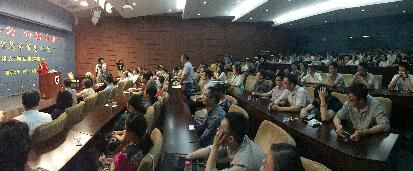
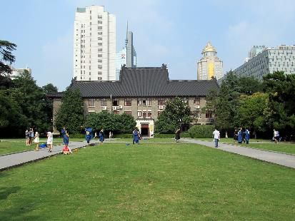

南京大学问答
『2015年6月29日』
（一）问：您今天的开示围绕着“智慧”，但对我们普通人来说，可能更看重的是“聪明”，比如在对孩子的教育中，我们会夸这个孩子很聪明，却很少夸他智慧。智慧和聪明到底有怎样的关联和差异？
答：大多数家长的确比较关注孩子是否聪明，不仅在亚洲国家是这样，西方的很多国家也是如此。但我们也知道，聪明跟智慧是有一定差别的，聪明的人不一定有智慧，有智慧的人也不一定显得很聪明。相对聪明而言，智慧需要长时间的积淀，更为厚重。
一个智慧的人，不一定能马上展现出他的优势。比如考大学的时候，那些考得最好的学生，凭着自己的聪明和运气，进入顶尖大学，但随着他们毕业，开始工作、创业，在各方面不一定还能保持这样的辉煌；相反，有些虽然没考上名牌，但之前积累的学识，让他们在后来的整个人生中，慢慢显现出亮色，达到很高的造诣。
今天我们的价值观，普遍看重孩子的聪明，却很少关注他是否具备另外一些品质，比如听话、有爱心、乐意帮助人、坚强、勇敢、有耐心等等，但这些才是人生中更重要的功德。如果我们把孩子将来是否有前途，全部用聪明的标尺来衡量，做父母的只关心孩子的考试成绩、分数排名，在某些层面上，可能会是个错误。
因此在孩子的教育上，我觉得父母一方面要培养他的聪明和技能，但更重要的是，应该教他如何为人处世，让他有一颗善良的心。从小灌输一种理性和慈悲的教育，对他的成长很有意义。否则，老师和父母关心的都是他的成绩好不好，其他方面再差劲也不管，即便将来也许能考上一个好学校，找到一份好工作，暂时比较顺利，但越往后走，可能会适应不了，会一败涂地。
这是很有可能的，我们都需要关注。

（二）问：我学的是物理，非常想领悟这个宇宙的真理，也很想为别人做一点事情。以前读爱因斯坦的传记，里面有句话说，这个世界上所有的生命都是联系在一起的，我对此深感信服，并由此读了一系列的相关书籍。后来在老师的指引下，我领会到了一切都是心的游舞，觉察到宇宙与自己其实并无太大的差别。我很想更进一步，当然老师也说过，要获得即身成就是不能求快的，但我现在生病了，生了很重的病，应该算是气脉紊乱吧，感觉自己的心没办法安住下来，尤其是最近五个月，修法一直比较停滞，内心有点焦急，毕竟世事无常、人生苦短。今天见到您，我很激动，希望能得到您的传法。
答：爱因斯坦的传记，我也很喜欢。但爱因斯坦说的宇宙同体，实际上是在微观理论中说的——万事万物源于同一个磁场，或者同一种力量。这种力量在佛教中来讲，就是“空”，空中能产生一切，但这个空不是无，而是明空无二。
想要证悟这种境界，在佛教中需要经过长期的修行，到那时，的确可以轻松了悟万法的本质。在修行过程中，最初可能会有相似的顿悟，随着不断的修持，最终也能获得真正的大彻大悟。我相信有这样的境界。
关于你的病，密宗当中有气脉明点的修法，比如，为什么我们的心像猴子一样刹那都不能安住，原因就是气脉一直在运行，如何调整气脉，在显宗当中几乎是没有提及的，但在密宗当中，依靠圆满次第的一些修法，就可以让气脉的运行平缓下来。
这里所说的气，既有呼吸的气，还有身体中运行的一种力量。通过调整身体坐势、调节每一个脉轮，控制好这种力量，我们的心就会渐渐安静下来。
关于起心动念跟气脉的关系，密宗里有一些特别好的修法和窍诀，在显宗当中确实找不到。
然后在对抗疾病的时候，心的作用很重要。十多年前我也得过严重的病，当时很多医生跟我说，可能只有六个月的生命。我就想这六个月要做点什么，因为也许会死，也许不会死，但假如真的只有六个月生命，我还是想在临死前翻译一本有意义、有代表性的书。
有天下午，我在成都一个书店里找到了藏文版的《释迦牟尼佛广传》，那本书很厚，有500多张，一千多页，我想，这个翻译完之前，自己肯定已经离开人间了，但不管怎样，还是发愿把它翻译出来。
后来我带着这本书去厦门治病——昨天在厦门我就想起了这段经历：那时候住院四个多月，每天打吊瓶，上午几瓶，下午几瓶，一边翻译《释迦牟尼佛广传》。最终用了五个月时间，翻译了三十多万字，圆满完成。
记得刚开始翻译的时候，医院后面正在建楼，我还在日记里写：这栋大厦正在修建中，我心中的智慧大厦也在修建中；这栋大厦应该会落成，而我的大厦却不一定能完成……
结果六个月之后，那座大厦已经竣工了，我的身体也基本恢复了健康。
所以我觉得，面对疾病，心的力量很重要。我们对病不用太执著了，找一件自己喜欢的、觉得有意义的事情做下去，借助三宝的加持也好，自己的努力也好，各方面因缘会慢慢好转的。
（三）问：在大学的教育计划中，一个学生从入学到毕业，需要四年时间。由此我很好奇：一个众生从凡夫位到佛位，是不是也需要一定的时间？虽然每个人的根基不同，可能会有一些变化，但会不会还是有一个大致的定数？这是第一个问题。
第二个问题是，我很好奇生命的起源，想请您开示一下如来藏光明的问题，因为搞不清楚从如来藏光明里怎么会突然衍生出生命的。
第三个问题是，如果说生命来自如来藏的一念妄动，那成佛以后，证得如来藏光明以后，会不会因为一念妄动又堕落成凡夫呢？
答：第一个问题。成佛的确有一个过程，按照显宗的基本观点，就像学校里这样，大学读四年，研究生、博士生读三年甚至七八年，这样的定数在佛教里也是有的。佛经中讲过，根据众生根性的不同，有些三个劫成佛，有些要七个劫，有些要三十三个劫。有一部论典叫《三戒论》，也讲到整个成佛的过程，需要三大劫、七大劫或者三十三大劫。而最常见的讲法是“三大阿僧祇劫”。
而无垢光尊者在著作《遣除心之黑暗》中说，以上都是根据众生心力的不同，按照最底线设置的“定数”而已，实际上如果是利根者，在短短的时间内也可以成佛。他引用《中般若经》中的一句话：“获得现见诸法清净法眼之大菩萨，若欲求正果，则七日亦可现前无上菩提圆满佛果。”利根菩萨想成佛的话，七天就可以了。对于这些教证，我们可以这样理解：成佛快慢之所以有差别，是因为众生在断除分别念的窍诀运用上，有利根和钝根的差别。
第二个问题。我们的心最开始是光明的，后来怎么出现无明，或者说关于生命的起源问题，第三世噶玛巴自生金刚专门写过一部论典叫《宣说如来藏》，噶举派的一位大德为它写过注疏，我也想翻译这部论典，但不知道有没有时间。这里面就讲到如来藏的本体像虚空、大海一样，虚空中会突然起现云雾，大海上会突然涌现波浪，用这些比喻来解释如何从如来藏光明中出现生命的起源。其中还讲到了更细微的，包括每一个无明、每一种因缘产生的过程。
第三个问题。虚空中的云，是很可能再次起现的，但证得如来藏光明之后，心为什么不会再退返呢？对这个问题，法王如意宝写过一部论典，叫《本基当中显现基现》，大概有三十多页，是法王所有著作里最重要的一部。论中就直接讲了在最初的第一刹那，众生是如何迷乱的，普贤王如来又是如何获得佛果的，对这方面的分析非常透彻。其中用了一个比喻：就像水银经过消毒之后，不会再有毒性；同样的道理，如来藏彻底遣除障碍之后，也不会再次迷乱。法王的这个比喻说得很清楚，获得成就之后是不可能再退返的。
不仅是法王的论典，因明的《释量论》中也讲了这方面的道理。它用的比喻是：就像烧坏的种子不会再发芽；如来藏上面的污垢一旦被净除，也不会再回到原来。或者说，成佛后所显发的果位功德，跟基位还是有所差别的。
这是专业性比较强的问题，可能很多人都没有听懂。
（四）问：我想问一个很基本的问题，人活着的终极目标是什么？
因为我感觉越活越累，越活越不开心，越活越迷茫。按照现在世俗的观点，大概都奔着能当大官、有房有车、有漂亮老婆……但我觉得以后真正得到了这些，自己也不会很快乐。就像以前拿到本科录取通知书的时候，我是相当开心的；拿到研究生录取通知书的时候，已经不那么开心了；等拿到了博士录取通知书，我就只是看了一眼，直接放进抽屉里，真的一点也不激动。所以我想问一下，人生的终极目标到底应该是什么？
答：我写过一本书，叫《苦才是人生》（众笑）。
为什么不开心，我想可能有几个原因：第一个原因呢，如果我们把生命看成只是几十年人生的这么一个载体，不看前世，也不看后世，那么最初你会对那些没尝试过的人生感到好奇，比如没有钱、没有车的时候，就向往有钱有车的生活；而一旦你得到这些，其实会越来越没有感觉。这就是轮回的本性。
《金刚经》里讲：“凡所有相，皆是虚妄。”当你真正得到时，可能会发现很多东西仅此而已。比如没有一百万的时候，觉得做个百万富翁应该很幸福；后来真的有了一百万，会不会开心呢？也许刚开始会，但接下来就不见得。这是一个普遍规律，因为轮回的本性如此。
如果我们缺少对前后世的基本认知，看待人生是会有些悲观。这是我分析的第一个原因。
第二个原因是，现在的人不太关注对内心的修养，由此感到的快乐也比较少。因为很长一段时间以来，人们的价值观都是赚钱、成家，觉得这才是活着的意义，而当物质拥有得越来越多时，人们却发现心灵还是空虚的。就像我刚才提到的，跟物质相比，内心其实更重要。如果我们的内心有一种自我平衡的能力，起初可能会像很多人一样，也想得到物质，觉得它是生活中的必需，但慢慢会意识到，让内心得到调整和满足，更重要。
其实你在读本科生、研究生、博士生的时候，也可以培养内心的信仰、慈悲等，当你在这些方面付出努力，就不会只执著那几张文凭，同时也收获了自身的修养。
比如藏地很多信仰佛教的人，也看重成家、赚钱这些事，但他们很清楚，人生还有其他的目标：“我要积累资粮”“我要行持善法”“我生生世世要成为什么样的人”……这些在心里占有更重要的位置。一个有信仰的人，会把这些看得很重。
所以我们可以给自己确立两方面的目标，物质的也有，精神的也有，在物质上得到满足的同时，精神上的满足也会随之而来。
第三点呢，关于人活着的真正意义，前面我也讲了，其实不仅仅是自己成家立业，更重要的是，要想着对社会做一点什么。如果刚进大学、刚参加工作，刚开始创业的时候，就有这样的理念：“有房有车虽然好，但这不是我关心的重点。”经常想着怎样对社会有利、怎样能帮到别人，在这些方面考虑得比较多，你也许不会感到无聊的，因为觉得还有很多事没有完成。
比如我做一个企业赚了一百万，能不能至少把其中的五万捐助给其他众生？说五十万有点太多了，可能我还没有这样的心量，但从一百万里拿出五万，这样的比重还是可以接受的。用这笔钱为别人做点事情，可能自己会更加充实。
今天的很多人好像越活越没有感觉，越活越迷茫。但如果我们既懂得前世后世的存在，也懂得利他的价值，当自己获得成功的时候，会有一种自豪；遭遇失败的时候，也不会特别悲观。因为你有了最重要的事业，对此不会轻易舍弃。
（五）问：在我没开智慧、不信因果之前，种下了很多恶因，我确信会得到恶果，应该怎么做才能弥补这些过失？
答：确实，在我们还不知道因果取舍，不知道善有善报、恶有恶报的道理之前，或者说即便知道，但是因为种种的原因，生活所迫、身不由己等，会做很多不该做的事。但不管怎样，按照佛教的观点来讲，这些都是可以忏悔的。
佛经里有一个很典型的例子：指鬘王受到恶师的迷惑，认为七天内杀一千个人就能获得梵天果位，于是到处杀人。杀到第999个人的时候遇到佛，连佛也想杀，后来在佛的点化下，他意识到自己造下了弥天大罪，非常伤心，于是精进忏悔，最终净除罪障，成就了圣果。
米拉日巴尊者也是这样，起初为了报仇，他杀了很多人，后来为了忏悔，他前往寂静地方，依止马尔巴罗扎精进修行，即生已经成就。
所以我想，人难免会在无知的情况下，或者因为种种原因造下严重的罪业，但如果能够虔诚忏悔，还是有清净的机会。
尤其是金刚萨埵的修法，对忏悔罪业非常有用。在我们佛学院，每年都召开金刚萨埵法会，参加的人非常多。今年我下山的时候，法会还没有开完，人山人海，小小的喇荣山沟根本没办法承载，我也累得不行。为什么人这么多？虽然很多人不会公开说，但其实大家都知道，作为凡夫人，有心无心、起心动念间，都会造很多罪，这些罪业需要我们真诚的忏悔，才有清净的时候。

（六）问：最近跟我的MBA同学圈交流佛法的时候，说到佛法的闻思修，一个同学说，不需要，心中有佛就可以了。我想问，您认为什么样才算心中有佛？这是第一个问题。
第二个问题是关于梦的。我小时候经常做梦，有时候梦里知道自己在做梦，醒过来就可以了；有时候又不知道。我想问为什么会这样？是什么原因让我在梦中时而明白是梦，时而又不明白呢？
答：你的第一个问题，应该让那个说“心中有佛就可以”的同学来回答，因为是他说的。（笑）不过我可以替他回答。
这种说法，其实是对佛教不太了解。很多人觉得心中有佛就可以，但他们心中到底有没有佛呢？很难说。心中有佛的时候，的确就像济公活佛说的“酒肉穿肠过，佛祖心间留”，但很多人都不知道，其实接下来还有两句——“世人若学我，如同进魔道”。
这种观念，跟六七十年代一些武打片的引导也有很大关系。如果心中真的有佛倒是可以，但你能不能观得起来？要达到这样的境界，是很难的。那些说心中有佛的人，往往同时在造各种恶业，喝酒、吃肉，但佛不可能让你去造恶业。所以这些人只是说起来好听，如果心中有佛，应该时时刻刻都能观佛，但我们大多数人，一年365天，能想起佛的时间可能只有几秒、几分钟，除此之外的所有时间，都在贪嗔痴里，都在昏昧中。
一般来讲，现在的人对佛教或其他宗教都不是太懂，因为没有好好地闻思修行、潜心研究过。但他们却自认为像代言人一样权威，对其他更不懂的人指指点点，“你不用学习，不用闻思修行，什么都不用……”而很多人也把这些没有发言权的人当作权威，言听计从。这个时候，如果自己受过佛法方面的教育，懂得一些理论，各方面智慧有所提升，你就不会迷惑。
目前这个阶段是比较混乱，混乱的原因在于，很多人虽然有了信仰，但不懂什么是正信，什么是迷信，于是就出现形形色色的“佛教代表”。包括在藏传佛教里，的确有一些很好的上师，但也有一些别有目的的人，跟你讲一些似是而非的“法”。特别像江南一带，各方面的条件还不错，也许来的上师比较多，如果自己没有取舍能力，就会听到什么都“很好很好”，全然接受。这是在很多佛教团体都可能发生的情况。
其实就像世间的商品，如果买家不识货，假冒伪劣产品就会纷纷涌现于世；如果大家能懂一点基本的鉴别，哪些是真的、哪些是假的、什么样的质量比较有保证，很多假货就不会有生存空间。
文艺复兴或者工业革命刚开始的时候，有很多非常复杂的情况发生；今天的社会在信仰方面也是刚刚开始复兴，既有正信，也充斥着各种情况。我始终认为，你不信仰佛教就另当别论，但如果想要信仰，最好能系统地闻思修行，要大量地学习，只看一两部论典是不行的。
听有些老师说，你们正在提倡读诵百部经典。我想问，只是读诵，还是要学？其实学习的话，从经典开始可能比较困难，因为经典的内容很复杂，会有内外密不同层面的含义。如果只是读诵，念念《地藏经》《金刚经》都很好，但如果要学，建议大家从论典入手，系统地学。经过一段时间的学习之后，你会明白佛教到底是怎样。
我也经常要求佛教徒要学习，对一些形式化的佛教不要很重视。虽然供灯、磕头、烧香也是佛教的行为，也有各自的功德，但这不是佛教的核心精神。听说有些企业家，把佛教看成仅仅是在寺院里拜个佛、在功德箱里放几块钱、给出家人作个供养，培一点福报——这些也重要，但更重要的还是佛教的核心精神：慈悲和智慧。我们怎么去修，怎么去学，对这个体系一定要了解。但了解的过程是比较辛苦的，不那么容易，要把它当作一门课程那样去学，你才会发现关于佛教的说法，哪些是真的，哪些是假的。
我认识的一些企业家，心很善良，常常去做布施、供养，但都不太懂什么是佛教。他们看到弥勒佛是笑眯眯的，一进寺院就对自己笑，可能代表我生意兴隆；释迦牟尼佛是很威严的，可能要我好好做人做事。我今天给弥勒佛交了50块钱，给释迦牟尼佛交了100块钱，已经跟“领导”搞好关系了，以后他们一定会时时关注我，如果我遇到了什么难题，他们会派四大天王来帮我解决……把佛教信仰跟民间说法都混在了一起。当然，这么理解也不是完全不行，但更重要的还是要学习，自己才不会盲目。
所以你的第一个问题，有些人的语言如果是出于好心，我们也不用否定他们的观点，但作为企业家，还是应该把佛教真正的核心问题跟它的部分仪式分开，抓住重点很重要。
至于第二个问题，梦的情况是各种各样的。按照密宗的观点，的确可以在梦中认识梦，像宗喀巴大师的《集密意续》讲义等，就有很多认识梦的方法；而按照显宗因明学的观点，梦是一种迷乱的意识状态。
所以对梦没必要特别执著，因为现在就是一场梦，你在梦中问问题，我也是在梦中回答。梦里见过你。
（七）问：要怎样踏上资粮道，怎么去发广大的慈悲心、菩提心？我觉得我们的菩提心都不够大。
答：佛教讲五道：资粮道、加行道、见道、修道、无学道，资粮道是最开端的。其中资粮道又分小资粮道、中资粮道和大资粮道。加行道又分暖、顶、忍、世第一法。
资粮道的修持就是了解空性、积累资粮、净除罪障。通常认为，从我们相续中真正生起菩提心开始，就进入小资粮道了。那怎样生起菩提心呢？可能先要懂得众生的痛苦。因为无量无边的众生在轮回中所感受的三大痛苦为主的一切煎熬，是非常难以忍受的。
而在修菩提心之前，还要修慈、悲、喜、舍四无量心，四无量心没有修好之前，菩提心是很难观起来的。在藏传佛教所有的菩提心修法前面，都会讲到四无量心。当中最根本的修法，就是从“我的父母”开始，这是我最关心的人，所以不能跟他们吵架；然后是和我有关的周围的人；最后扩大到我的怨敌，把他们观想在我的前面，直到不再讨厌他们。修菩提心也是如此，逐步逐步把心不断扩大、再扩大，而不是今天刚开始修，就要去帮助天下所有的众生。这样说起来很舒服，但其实只是一句虚辞，要脚踏实地的话，就是从父母开始，一步一步扩大到所有众生。这样慢慢修，有些人在短短的时间内也会生起真实的菩提心；有些人则可能需要更长的时间。每个人的根基和次第不同。
（八）问：善恶往往在一念之间。如果碰到不开心的事情，或者身处负面情绪中，应该怎么做才能把它转变成正向的情绪，让大家都处于正能量的环境中呢？
答：我们的负面情绪，在佛教里讲，有贪心、嗔心、痴心、傲慢、嫉妒等等。其实这些情绪，你不认识它的时候，可能并不知道它是负面的。尤其在这个崇尚开放、自由、浪漫的时代，很多人会觉得负面情绪挺好，爱恨情仇，才是人生。尤其是一些80后、90后的心态，确实不知道怎么说，我刚才也在问一些老师，现在的年轻大学生到底在想什么？很多观念在60、70年代的人看来，确实没办法认同。他们把这些负面情绪当作正面的东西，认为是一种生命活力的代表，用现在的话讲就是“很棒”“很酷”“很自我”。
但实际上我们都知道，负面情绪并不好。耶鲁大学的科学家通过反复实验发现，负面情绪会在人体内产生毒素，这种毒素对身心健康都有害。很多心理学家也认为，世界上70%的人都有负面情绪导致的心理疾病。
佛教讲，众生皆有分别妄念。从大的方面看，分别妄念就是一种负面情绪。正常情况下，这些是不严重的，但现在看来，很多负面情绪的产生，确实已经对人们的健康、工作和生活带来了一定危害。在这种情况下，我们要学会把它转化为正面情绪。
怎样转化呢？首先要懂得负面情绪对自己的害处。比如你特别嗔恨、大发雷霆的时候，说出的话不可能有理智，做出的行为也不可能很正常。我看过一本书叫《一生气你就输了》，每次生气过后，你可能会想起当时说别人、骂别人是不对的，但在负面情绪的驱使下，你就是控制不住。
所以，不管别人是怎么说，尤其西方人的观念更加开放，很多人也会受到影响，但我们还是要认清正面情绪和负面情绪在本质上的差别：一个是药，一个是毒。
对这些负面情绪，年轻人一定要重视。今天在座有很多都是大学老师，也希望你们能跟学生多讲一讲负面情绪的危害。
现在吸毒的人也越来越多。这次我去了四个监狱，了解到监狱里的很多犯人都是因为吸毒而堕落的。佛教里把贪嗔痴叫做三毒，说烦恼像毒药一样，会损坏自己的心灵。但是很多年轻人不觉得这是毒药，还认为它很有意义。
吸毒者往往最初只是好奇，听说吸毒很舒服、很快乐，就想试试看，结果吸着吸着上瘾了，很难再戒掉。我也了解过毒品的化学成分，会对神经造成永久性损伤，到最后谁也无法控制。
虽然国家有各种戒毒所，但很多时候这些机构也没有办法。有个吸毒者已经第三次进监狱了，每次放出去又开始吸毒贩毒，让监狱长都特别头疼，一方面他不断回来，给狱方带来很多麻烦；另一方面又确实很可怜。
很希望学校、老师都能重视起来，多了解这些情况，研究一下怎么从教育上帮助年轻人。今天社会的最大威胁，并不是杀人放火，而是存在于我们身边的各种青少年犯罪，这些现象越来越严重。但实际上，很多都是不应该发生的。
（九）问：今天非常高兴，又一次聆听您的开示。我想最后代我所有的学生，和在场第一次见到您的学生，祈请您给他们一点智慧的加持！
答：很多上师、堪布、活佛，用自己的身体或者其他方式给大家灌顶、加持，这很重要，但我觉得更重要的，可能是用智慧做加持。
我经常讲，如果能给大家什么“加持”的话，就是到处去讲一讲课。在讲课的过程中，有些人可能会有一点点转变；有些人可能觉得没什么；有些人可能从头睡到尾，最后大家鼓掌，才突然醒过来——我不是说今天啊，今天好像没有睡觉的，大家都很认真、专注。我有这样的毛病：台下人很专注，我就能把想讲的都讲出来；台下有一个人不专注，就讲不下去了。所以今天我的“智慧加持”应该已经都给完了。
如果还要我再“加持”一下，那就提一点希望。希望你们每个人从现在开始，既要发挥人生中的潜力，做好你的工作和事业，这是非常重要的；同时也要花一定的时间，去探讨人生中最关键的问题，包括生老死病、调整心灵等等，这些或许更加重要。
我们每个人都在绘制人生的蓝图，但有时候，人生不会是你最初设计的那样，不会沿着预期的路走。乔布斯说，在人生的每一个阶段，要听从自己内心的声音。确实如此，我们对人生有很多大致的规划，比如二十岁之前读书，三十岁之前成家、创业，等等，但到了某一个节点，可能会发现人生不是自己想的那样。原本想走的路走不下去，再换一条路走又有点困难，有时候还出现第三条路，在无从选择的时候，不如听从内心的声音。等到了人生终点，回头看，就会看到这条路有很多转折点，有些是成功的亮点，有些是失败的痛点。
但不管怎样，每一段经历都是你的人生，都是增长智慧的机会。不要对负面经历就排斥、否认，对正面经历就夸大、宣扬，不用这样。每个人都有负面和正面的经历，有些可能负面的多一点，有些可能正面的多一点，但它们都是你的真实演出，一段一段连起来，才铺成了完整的人生路。这条路走起来很不容易，但我们总会走完。在这个过程中，如果能平衡对内在心灵和外在世界的关注，无论遇到什么，你也能够应对。
前不久我发过一个微博：“每个人都有顺利的时候，也有挫败的时候，达到顶峰不要太趾高气扬，跌到谷底也不要太垂头丧气，因为这些都会过去，都会成为你的精彩经历。”
对这些道理稍微有一点概念的人，也知道一切都会过去，但更多时候还是需要一种智慧。这种智慧怎么得到呢？一方面按照佛教的传统，比如念“嗡阿热巴匝纳德”祈祷文殊菩萨，或者念“嗡玛呢叭美吽”祈祷观音菩萨，这两位是智慧和大悲的象征，通过这种方式，可以在相续中种下善根。
另一种方式，是自己不断地学习，学习的过程中，要坚强。刚才有位同学说他的身体不好，其实身体不好也没什么，这个肉体肯定有不好的时候，内心也经常会烦恼，连拿到博士文凭都没感觉。
假如是我拿到博士文凭，肯定很高兴。你实在不想接受的话，这个证书给我用，我去别的学校到处介绍自己是博士。现在那些学校一般叫我堪布，有的叫教授，有了你的博士证书，我就很高兴地拿给他们，“看，我是南京大学的博士！”——开玩笑。（众笑）
所以，有很多办法可以调整心态，让自己开心。但总的来讲，需要智慧，也需要悲心。
谢谢大家！
主持人：
我在想，堪布讲他第一次来南京大学的时候是四年前，也就是说，我们的每一次相遇，其实都是一段不可重复的缘分。
相信今天课堂内的你们，特别是南京大学的年轻学子们，也许在今天的讲座上没有感觉到什么，但若干年后，当你回想起曾经在中美报告厅听这位大堪布讲到的某一句话，可能对你的人生会是一种点醒。
再次用热烈的掌声，感谢堪布的智慧开示！